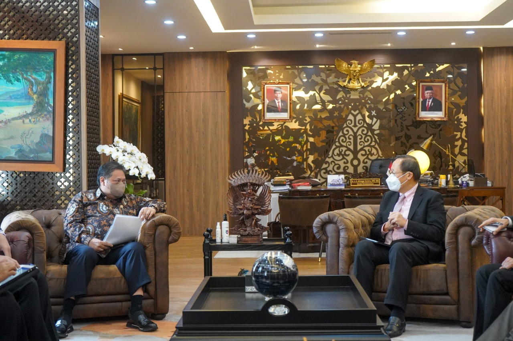
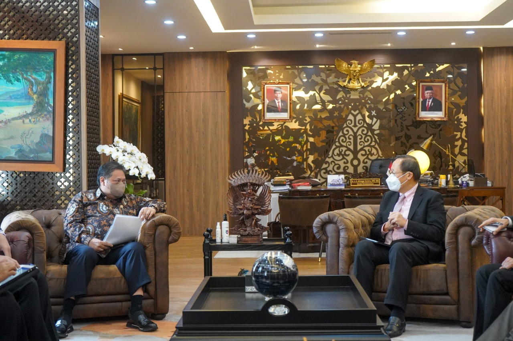

Main Content
Kerja sama di bidang Ilmu Pengetahuan dan Teknologi (IPTEK) antara Indonesia dan Singapura mencakup berbagai inisiatif yang bertujuan memperkuat kemampuan teknologi kedua negara, seperti kolaborasi dalam penelitian dan pengembangan di bidang teknologi digital, kecerdasan buatan, energi terbarukan, serta kesehatan, termasuk pengembangan vaksin dan bioteknologi. Selain itu, kerja sama ini juga melibatkan pengembangan kapasitas sumber daya manusia melalui program pelatihan dan pendidikan, di mana Singapura mendukung peningkatan keterampilan tenaga kerja Indonesia, khususnya di bidang teknologi informasi, pengelolaan data, dan keamanan siber.
Tujuan Kerjasama Bidan IPTEK antar Indonesia dan Singapura
Tujuan kerja sama di bidang Ilmu Pengetahuan dan Teknologi (IPTEK) antara Indonesia dan Singapura mencakup berbagai aspek strategis untuk mendukung kemajuan teknologi dan pembangunan berkelanjutan di kedua negara. Salah satu tujuan utamanya adalah meningkatkan transfer teknologi dari Singapura ke Indonesia untuk mempercepat penguasaan teknologi canggih, seperti kecerdasan buatan, digitalisasi, teknologi ramah lingkungan, dan solusi berbasis data, yang dapat digunakan untuk mendukung sektor-sektor prioritas seperti manufaktur, pendidikan, serta pengelolaan lingkungan. Hal ini juga disertai upaya memperkuat kapasitas sumber daya manusia di Indonesia melalui berbagai program pelatihan, pendidikan, pertukaran pengetahuan, dan kerja sama di bidang inovasi teknologi guna menciptakan tenaga kerja yang lebih kompeten dan siap bersaing di era global. Selain itu, kerja sama ini bertujuan untuk mendorong inovasi bersama melalui kolaborasi dalam penelitian dan pengembangan di berbagai sektor strategis, termasuk kesehatan, energi terbarukan, bioteknologi, serta teknologi digital, yang dapat memberikan manfaat ekonomi sekaligus sosial bagi kedua negara
Contoh Konkret kerja sama dalam bidang IPTEK
1. Salah satu contoh adalah kolaborasi antara lembaga penelitian atau universitas, seperti Agency for Science, Technology and Research (A*STAR) di Singapura dan lembaga riset di Indonesia. Kolaborasi ini mendorong pengembangan solusi di bidang teknologi kesehatan, energi terbarukan, dan kecerdasan buatan. Berikut merupakan beberapa kerjasama dalam bidang iptek:
2. Pengembangan Palapa Ring, jaringan serat optik yang menghubungkan seluruh wilayah Indonesia. Singapura membantu dengan memberikan teknologi dan pengetahuan untuk proyek ini.
3. Forum bilateral Singapore-Indonesia Six Bilateral Economic Working Groups untuk merespons perkembangan teknologi digital.